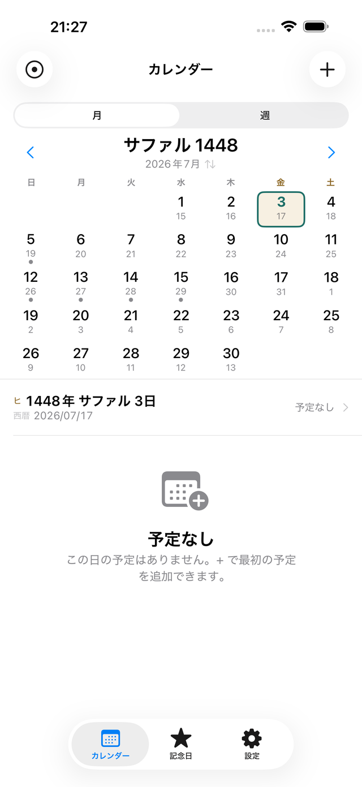
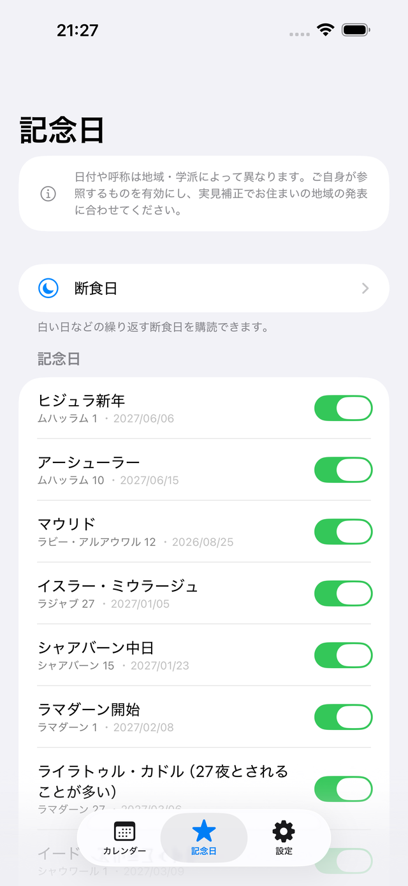
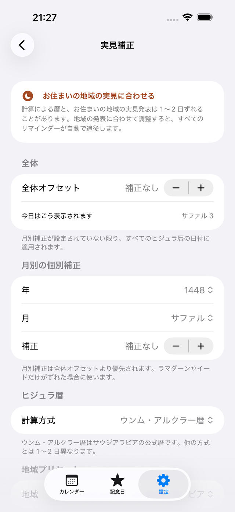

ヒジュラ暦（イスラム暦）を「第一の暦」として扱うカレンダーです。西暦は常に併記します。
ヒジュラ暦で繰り返す予定と、地域の実見発表に通知が追従する補正 —— 標準のカレンダーではできない2つを担います。



iPhone / iOS 26.0 以降・日本語 / English / العربية・アカウント登録不要
月表示でも週表示でも、ヒジュラ暦の日付が主役です。西暦はその下に小さく併記されるので、周囲の予定と突き合わせるときにも困りません。
月表示のヘッダーをタップすると、ヒジュラ暦と西暦の主従が入れ替わります。西暦で考えたいときだけ切り替えて、また戻せます。
アラビア・インド数字（٤٥٦）と算用数字を切り替えられます。週の開始曜日（土曜／日曜）と週末（金土／土日）も地域プリセットに連動し、設定から変更できます。
太陰年は西暦より約11日短いため、ヒジュラ暦の記念日は西暦では毎年前倒しになります。 西暦ベースのカレンダーで「毎年」を設定しても、それはヒジュラ暦の「毎年」ではありません。
ヒジュラ暦の同じ月日に、ちょうど1年ごとに巡ってきます。西暦での日付は毎年変わりますが、設定は一度きりです。
毎月同じヒジュラ日、あるいは「ラマダーン月の1日」のような特定の月日を指定できます。毎週の繰り返しにも対応します。
作成中に、その繰り返しが西暦のいつに当たるかをプレビューできます。「来年のラマダーンは西暦で何月か」がその場で分かります。
計算による暦と、お住まいの地域の月の実見発表は1〜2日ずれることがあります。 そのたびに登録済みの予定を1件ずつ直すのは現実的ではありません。
地域の発表に合わせて -2 〜 +2 日を設定すると、カレンダーの表示と登録済みリマインダーの発生日がすべて自動で追従します。手直しは要りません。
「ラマダーンやイードだけがずれた」という場合には、その月だけを個別に補正できます。月別補正は全体オフセットより優先されます。
ウンム・アルクラー暦（既定・サウジアラビアの公式暦）／民用暦／表形式暦を切り替えられます。
Qamari は「正しい日付」を主張しません。どの発表に合わせるかを決めるのは、いつでもあなたです。
記念日の日付や呼称は地域・学派によって異なります。そのため Qamari は、記念日をまとめて有効にはしません。 一覧から、ご自身が参照するものだけを個別に ON にしてください。断定的な解釈は一切表示しません。
ヒジュラ新年・アーシューラー・イード・ラマダーン開始など。ON にしたものだけがカレンダーと通知に出ます。
白い日（毎月13・14・15日）は無料で使えます。Pro では月曜・木曜、シャウワール月の6日間のプリセットも購読できます。
記念日に、ヒジュラ暦で何年経ったかを表示できます。西暦での年数とは異なります。
Qamari は完全にオフラインで動作します。アカウント登録は不要で、 予定も記念日の設定も、すべて端末内にのみ保存されます。開発者のサーバーに送信されることは一切ありません。 通知はローカル通知のみで、機内モードでもすべての機能が動作します。
広告はありません。トラッキングもしません。App Privacy は「データを収集しません」です。
| 機能 | 無料 | Pro |
|---|---|---|
| デュアル暦カレンダー | 全機能 | ✓ |
| イスラム記念日 | 当年分 | 無期限 |
| ヒジュラ暦リマインダー | 3件まで | 無制限 |
| 実見補正 | 全体のみ | 月別も |
| 断食日プリセット | 白い日のみ | 全て |
| ウィジェット | — | ✓ |
| 書き出し・カレンダー連携 | — | ✓ |
| 文章から入力 | — | ✓ |
| 通知の時刻 | 全体で1つ | 予定ごと |
| ラマダーンの日数・記念日の説明 | — | ✓ |
| ショートカットと Apple Watch | — | ✓ |
Pro は買い切り（¥1,500）です。サブスクリプションではありません。いつでも復元できます。
2点あります。ひとつは「毎ヒジュラ年に繰り返す」予定が作れること。太陰年は西暦では毎年約11日ずつ前倒しになるため、西暦ベースのカレンダーでは表現できません。もうひとつは実見補正で、地域の実見発表に合わせて日付をずらすと、登録済みのリマインダーがすべて自動で追従します。
実見補正で調整できます。全体オフセットは -2 〜 +2 日の範囲で設定でき、Pro では特定の月だけを個別に補正することもできます。補正するとカレンダーの表示と、登録済みリマインダーの発生日がすべて追従します。
ウンム・アルクラー暦（既定）・民用暦・表形式暦を設定から切り替えられます。ウンム・アルクラー暦はサウジアラビアの公式暦です。方式によって1〜2日異なることがあります。
すべて端末内にのみ保存されます。アカウント登録は不要で、外部への送信は一切ありません。広告もトラッキングもなく、機内モードでもすべての機能が動作します。
iOS の仕様上、アプリが同時に予約できる通知は 64 件までです。Qamari は直近の 50 件を常に保持し、通知が消化されるたびに先の分を自動で補充します。予定そのものの件数に上限はありません（Pro）。
いいえ。Pro は買い切り（¥1,500）です。一度購入すれば追加の料金はかかりません。設定と Paywall の両方から復元できます。
ありません。Qamari は日付の管理のみを行います。記念日の日付や呼称は地域・学派によって異なるため、ご自身が参照するものだけを選べる設計にしています。「正しい日付」を主張することはなく、最終的な判断は各自の学派・地域の当局にお任せしています。